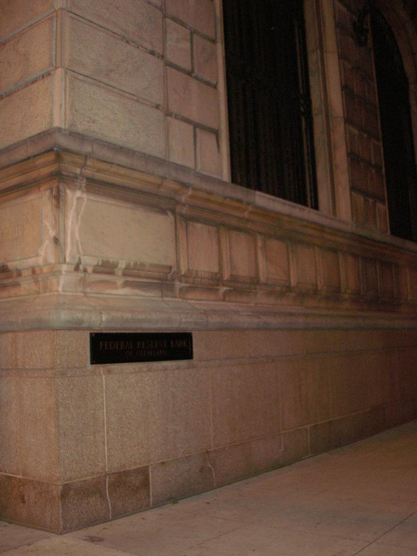

Federal Reserve Bank

The Federal Reserve Bank Building at Superior Avenue and East Sixth Street in downtown Cleveland is said to be haunted by a ghostly woman named Matilda. She is dressed like a flapper, the same way she was dressed when she killed herself in 1929 after the stock market crashed and she lost everything. Now she stalks employees through the gigantic old bank.
The evening preceding my Halloween 2008 overnight on WCSB, Cleveland State radio, nighttime DJ Orin took me on a brisk tour of several famous haunted places downtown--among them, the Federal Reserve. From the outside it's merely a solid-looking old-fashioned bank in the middle of a big city. Hopefully I'll have the chance to take some pictures inside someday.
Back
Sources
Petkovic, John. "Ghosts, Haunts, and Urban Legends." Cleveland Plain Dealer. October 31, 2000 pp. 1A.